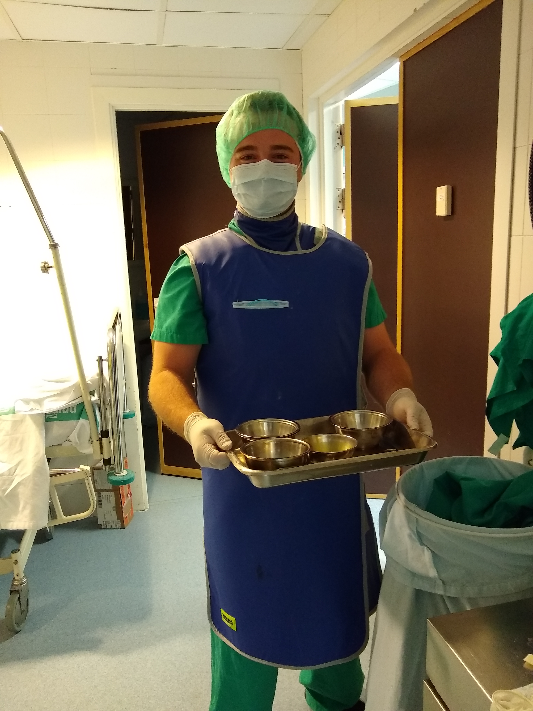

Since I was a high school student, I have always wanted to make a difference. I gained an interest in medicine, and this interest was always based off of a desire to serve. As the slogan for the US AirForce declares, my goal is to do this, "That others may live". This is my "why", or rather, my reason for doing what I do. I am motivated by a love of God, family, and others.
